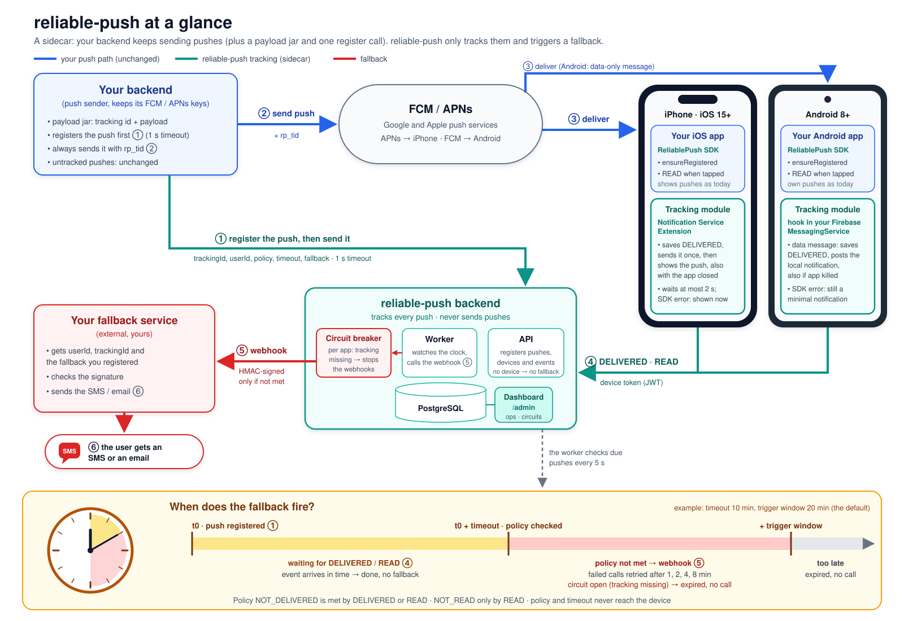

Open source · MIT · v0.2.0
reliable-push
Know whether each push notification was delivered and read. When it was not, in time, trigger a fallback (SMS, email, anything) through a signed webhook.
Track
The SDKs in your apps report DELIVERED and READ, also when the app is not running.
Decide
A policy per notification: fall back if it is not delivered or not read within N minutes.
Fall back
One HMAC-signed webhook to your receiver, which routes the message to another channel.
Use ← → or Space to move · O for the slide index · F for full screen · T to switch theme
Why
A push is fire-and-forget
FCM and APNs accept the message, and then you know nothing. Many pushes never reach the user, or reach them and stay unread.
- The device is offline, or the app was force-stopped.
- Notifications are disabled: permission, channel, Focus mode.
- The token is stale, or the device has no Google Play services.
- The notification arrived, but nobody opened it.
For critical messages this is not enough
One-time codes, order and delivery updates, security alerts, appointments: the user must get them, on some channel.
reliable-push closes the loop
It confirms each push from the device and calls your fallback only when the confirmation is missing.
The big picture
Two phones, two backends, one clock

- ① register the push
- ② send it, as today
- ③ FCM / APNs deliver it
- ④ the app reports DELIVERED, READ
- ⑤ unconfirmed in time: signed webhook
- ⑥ you send the SMS or email
The next slides zoom in: the backend (① ④ ⑤), then what happens inside an iPhone and an Android phone (③ ④).
The flow · backend
Inside the backend: register, track, wait, fall back
API · every instance · answers at once
Register POST /v1/notifications, sender keyyour trackingId, userId, policy, timeout, fallback text
Insert once per trackingId (a retry finds the same row)
Active device → PENDINGdueAt = now + timeout
No device → NO_DEVICE_REGISTEREDclosed: never a fallback
Events POST /v1/events, device JWTDELIVERED, then READ on tap; any active device of the user counts
Policy met before dueAt: the row is closed, no fallbackNOT_DELIVERED: by DELIVERED or READ · NOT_READ: only by READ
one row per push,
its events and
every webhook call
Worker · every 5 s · only for due rows
Circuit check per appdue fallbacks while almost nothing was delivered? Tracking is broken: expire them, no SMS storm
Claim due rows with SKIP LOCKED and a leasemany replicas, each row once; a dead worker's rows are re-claimed
Still in time? dueAt + trigger windowno: FALLBACK_EXPIRED, no call (a stale SMS helps nobody)
Signed webhook to your receiverX-RP-Signature (HMAC), Idempotency-Key = trackingId
2xx → FALLBACK_TRIGGERED
5xx, timeout → retry after 1, 2, 4, 8 min
Final 4xx or attempts exhausted → FALLBACK_FAILED
The flow · inside an iPhone
iOS: the system shows the alert, the extension only confirms it
APNs
Alert pushtitle and body as today, plus mutable-content: 1 and rp_tid (the payload jar adds them)
Because of mutable-content, iOS wakes your Notification Service Extension before showing the alert: a small separate process, also when the app is closed.
Extension process · the SDK
rp_tid?no: returns false, nothing read; your code handles it as today
Save DELIVERED in the App Group queueon disk first: the send can fail, the event is not lost
Send it once: POST /v1/eventsdevice token from the shared Keychain; never renewed here (a 401 sets renewalNeeded)
Hand the alert back, exactly onceafter the send, at 2 s at the latest, at once on an SDK error
System, then your app
iOS shows the notificationiOS draws it from the push content: the SDK never builds it, so a tracking problem never hides it
Tap → app: trackOpen(response) → READqueued in the App Group, flushed one at a time
ensureRegistered at start, foreground, loginthe only place the device token is registered or renewed; it also sends what is queued
No DELIVERED arrives (phone off, push dropped)? At dueAt the backend falls back.
The flow · inside an Android phone
Android: the SDK turns a data message into the notification
FCM
Data-only message, high priorityrp_tid, title, body as data, no notification block (the payload jar builds it)
Why data: a notification message is drawn by Android in the background without running app code, so nothing could confirm it. A data message always reaches your app, even after it was killed, as with Catapush, OneSignal, Braze and Airship.
Your messaging service → the SDK
rp_tid?no: returns false, your own handling
Build the notification from the datatitle, body, channel, tap intent; your customizer adds icon, colour, actions
Gate: will it really be shown?notifications on, permission granted, channel open; if not, nothing is recorded and the fallback decides
Save DELIVERED on disk, then post the local notification
Send it once on the SDK threadoffline, 5xx, 429: JobScheduler retries · 401: renewalNeeded
The user, then your app
The notification is showndrawn by your app through the SDK, so it appears also when the app was closed or killed
Tap → trackOpen(intent) → READ
ensureRegistered at start, foreground, loginregisters or renews the device token, kept encrypted with the Android Keystore
Any SDK error: a minimal notification is still posted. Notifications off or channel blocked: no DELIVERED, so the fallback reaches the user.
The flow · two platforms, one contract
Same events, different mechanics
| iOS | Android | |
|---|---|---|
| The push | APNs alert + mutable-content: 1 + rp_tid | FCM data-only, high priority, rp_tid / title / body |
| Code that runs | Notification Service Extension (separate process) | your FirebaseMessagingService, also after the app was killed |
| Who draws the notification | iOS, from the push content | the SDK: it builds and posts a local notification from the data |
DELIVERED means | the extension ran: iOS is about to show the alert | the gate said it will be shown, and it was posted |
| Time bound | the alert is handed back within 2 s | disk write in milliseconds; the send runs after the post |
| If tracking fails | the alert is shown anyway | a minimal notification is shown anyway |
READ | trackOpen(response) on tap | trackOpen(intent) on tap |
| Token renewal | only ensureRegistered in the app, never on the receive path; offline events wait on disk | |
| No confirmation in time | the backend calls your signed webhook at dueAt: SMS, email or any channel you choose | |
Key principle
A sidecar, not a push gateway
Key principle
It never gets in the way of your pushes
You keep sending
Your backend sends every push with its own credentials. reliable-push never sends a push and never sees your FCM / APNs keys.
Down? Pushes still go out
If reliable-push is down, only tracking and fallbacks pause. Device events wait in the SDK queue and are sent later.
Display never waits on tracking
Pushes without rp_tid are left alone. iOS hands a tracked notification back within 2 s; on Android the SDK posts it, and any SDK error still ends in a notification.
| If this fails… | Your pushes | reliable-push |
|---|---|---|
| reliable-push backend down | sent and shown | Registration times out after 1 s and the push goes out anyway; events are queued on the device; due fallbacks are sent late, inside the trigger window |
| User has no registered device | sent as usual | NO_DEVICE_REGISTERED: not tracked, never a fallback |
| Device offline | delivered later, as today | DELIVERED is queued; if the timeout passes first, the fallback fires |
| SDK cannot reach the backend | shown | Retried from the on-disk queue |
| Fallback receiver down | not affected | Retried with backoff, then FALLBACK_FAILED / FALLBACK_EXPIRED |
Big picture
Components and how they talk
How it works
One notification, end to end
Register
Your backend generates a trackingId (payload jar) and calls POST /v1/notifications with it, userId, policy, timeout and fallback text; 1 s timeout.
Send
Your backend always sends the push through FCM / APNs, with rp_tid = trackingId, whatever step 1 answered.
Delivered
The SDK reports DELIVERED when the notification is shown, even with the app closed.
Read
The user taps it: the SDK reports READ. Any active device of the user counts.
Fallback?
Policy still unmet at dueAt? A worker calls your signed webhook. Met? Nothing happens.
POST /v1/notifications X-Api-Key: …
{ "trackingId": "6f1c…", "userId": "user-42",
"policy": "NOT_READ", "timeoutMinutes": 10,
"fallback": { "sms": "Your order has shipped." } }
→ 201 { "trackingId": "6f1c…", "state": "PENDING" }POST https://your-receiver/hook
X-RP-Signature: v1=… Idempotency-Key: 6f1c…
{ "trackingId": "6f1c…", "userId": "user-42",
"fallback": { "sms": "Your order has shipped." },
"reason": "NOT_READ", "attempt": 1 }How it works · 0.2.0
The sender: payload jar, register, always send
// reliable-push-payload: Java 8+, zero dependencies
String tid = TrackingIds.newId(); // local, no network
try {
client.register(RegisterRequest.builder() // timeout 1 s
.trackingId(tid).userId("user-42")
.fallback(Map.of("sms", "…")).build());
} catch (ReliablePushException e) { /* informative only */ }
String apns = ApnsPayloads.build(tid, title, body, null);
Map<String, String> data = FcmPayloads.data(tid, title, body, null);
send(...); // always, with rp_tid| Register result | Tracking | Fallback |
|---|---|---|
201 PENDING | yes | if the policy is unmet when due |
201 NO_DEVICE_REGISTERED | no | never |
4xx | no | never: a sender bug |
| timeout, row not stored | no | never: a missed fallback |
| timeout, row stored | yes | as PENDING, no duplicate |
retry, same trackingId | same row | once |
The jar builds APNs payloads (mutable-content, top-level rp_tid) and Android data-only, high-priority FCM messages, or decorates the sender's own; a PayloadException means "send it untracked". Golden vectors define the same rules for Node, .NET, PHP. Untracked pushes are unchanged.
How it works
Policy, timeout and trigger window
NOT_DELIVERED
Satisfied by DELIVERED or READ. Use it for "the user must at least receive it".
NOT_READ
Satisfied only by READ. Use it for "the user must see it".
Stale-fallback guard
After a long outage, an old fallback is not sent: it would arrive too late to help.
How it works
Fallback circuit breaker: no SMS storm
FALLBACK_EXPIRED, no webhook call, never re-sentDELIVERED events come back → closes by itself (after 1 min)Why
If tracking breaks (API or ingress down, SDK bug, bad app release), every push of that period would come due unmet. A missed fallback is cheaper than thousands of needless SMS.
Per app, by itself
One app's outage never stops another app's fallbacks. A campaign with offline users does not trip it: most of its cohort was delivered.
Operator control
Dashboard badge and history per app. "Resume fallbacks" (permission fallback-control, audited) forces it closed for 60 min. Every open and close is stored, logged and counted (rp_fallback_circuit_transitions_total). Config: fallback.suspended stops all fallbacks, circuit-breaker.enabled turns it off.
How it works
Notification states
Late events (after a fallback was claimed) are stored as LATE and change nothing. Duplicates are no-ops. While an app's fallback circuit is open, its due notifications go straight to FALLBACK_EXPIRED.
Component detail
Backend: one image, two roles
Scales out safely
Run any number of API and worker replicas. Workers claim rows with FOR NO KEY UPDATE SKIP LOCKED, so no fallback is sent twice by two replicas.
Crash-safe
Each claim has a lease. If a worker dies, another one re-claims the row. Outcomes are fenced on the lease, and receivers de-duplicate on Idempotency-Key.
Lightweight
Java 21, Spring Boot 4, no ORM, no Spring Security. The image is about 105 MB, non-root, with a read-only filesystem.
Component detail
Ops dashboard: see what happened
/admin/ page, admin key kept in the tab only/v1/admin API: X-Admin-Key, read-only except the fallback resume, audit-loggednotification · fallback_attempt · daily_stats · fallback_circuitThree questions
Support: did user X get notification Y, and did the fallback fire? Ops: delivery, read and fallback rates, and the due backlog now. Product: daily trends for up to 400 days.
Views
Overview · Trends · Search by user, external id, tracking id, state and time · Notification timeline with events and webhook attempts · Devices · Fallback circuit per app, with its history.
Safe by default
Off until an admin key is configured. Keys are stored hashed and scoped to apps. The fallback payload needs the payload permission. No script from outside. The only write action, "Resume fallbacks", needs fallback-control.
Component detail
Android SDK in your app
The market-standard model
Data message → local notification: the only way to run code for a push in the background, as Catapush, OneSignal, Braze and Airship do. Any SDK error still posts a minimal notification. AndroidConfigV2 waits for Google's GA; the payload jar is the switch point.
Honest delivery
DELIVERED only when the notification will be shown. If it is blocked, the fallback decides. The app calls ensureRegistered; Kotlin stdlib only, AAR about 75 KB.
Integration
if (ReliablePushMessaging
.onMessageReceived(this, msg)) return
// your own handlingWhat happens when a push arrives: the "Android flow" slide.
Component detail
iOS SDK in your app
// Notification Service Extension target
final class NotificationService: UNNotificationServiceExtension {
private let reliablePush =
ReliablePushExtension(appGroup: "group.com.example.app")
override func didReceive(_ request: UNNotificationRequest,
withContentHandler handler: @escaping (UNNotificationContent) -> Void) {
if !reliablePush.didReceive(request, withContentHandler: handler) {
handler(request.content) // not tracked: your own handling
}
}
override func serviceExtensionTimeWillExpire() {
reliablePush.serviceExtensionTimeWillExpire()
}
}Swift package
iOS 15+, Swift 6, Apple frameworks only, under 300 KB. Add it by tag with SwiftPM: from: "0.2.0".
Bounded wait, app closed too
The extension saves DELIVERED, sends it once (no token renewal) and calls the content handler exactly once: after the send, at 2 s, or when iOS ends it; at once on an SDK error. Only ensureRegistered in the app renews the token.
Store ready
Privacy manifest included. Short work in the extension, no hidden background activity.
The app and the extension share an App Group (event queue, state) and a Keychain group (device token). What happens when a push arrives: the "iOS flow" slide.
Using it
Integrate in three steps
1 · Sender backend
Generate the id and payload with the payload jar, register (1 s timeout), always send with rp_tid. Use client-java or any HTTP client.
String tid = TrackingIds.newId();
client.register(RegisterRequest.builder()
.trackingId(tid).userId("user-42")
.policy(NOT_READ)
.fallback(Map.of("sms", "…"))
.build());
send(ApnsPayloads.build(tid, t, b, null));2 · Mobile apps
Configure the SDK, call ensureRegistered at start and after login, hand pushes and taps to it.
// app (iOS and Android)
ReliablePush.ensureRegistered(...)
// iOS NSE
reliablePush.didReceive(request,
withContentHandler: handler)
// Android FirebaseMessagingService
ReliablePushMessaging
.onMessageReceived(this, msg)3 · Fallback receiver
An HTTPS endpoint that checks the signature, de-duplicates and sends the SMS or email.
check X-RP-Timestamp (± 5 min)
verify X-RP-Signature
= HMAC-SHA256(ts + "." + body)
dedupe Idempotency-Key
send SMS / email / …
answer 2xxGuides in the repository: docs/integration-guide.md, docs/android.md, docs/ios.md, docs/api.md.
Using it
Security by default
Sender API key
One key per app. The backend stores only its SHA-256.
Device identity
Devices register with the app's OIDC ID token, or with a short-lived signed grant. The user id always comes from the verified credential.
Device token
ES256 JWT, 90 days by default, with key rotation. Expired tokens still work for event reports and logout for a grace period (90 days by default). Revoked on logout and re-registration.
Signed webhook
HMAC-SHA256 with a timestamp, plus Idempotency-Key. Redirects are never followed.
Limits
Rate limits per device and per app, a 64 KB body limit, and events accepted only for the device's own app and user.
Clean logs
Structured ECS JSON with no tokens, keys, user ids or message text.
Running it
Deploy anywhere containers run
Docker
One image, configured with environment variables.
Helm chart
Combined or split, HPA, PodDisruptionBudgets, ServiceMonitor.
GKE · OpenShift
Values files included. Non-root, arbitrary UID.
Observability
Health probes, Prometheus rp_* metrics, ECS JSON logs.
Trying it
A harness to see it work
One command starts the real backend, two workers, PostgreSQL and a harness that plays the sender, the devices and the fallback receiver:
./scripts/demo.sh
# → http://127.0.0.1:8090/Fast clock: 1 product minute = 1 second. The same harness drives the Android emulator and iOS Simulator sample apps.
backend end-to-end entries, including worker crashes, retries, the fallback circuit and the browser smoke tests
Android emulator suite
iOS Simulator suite
CI on every push: builds, unit and integration tests, ≥ 80% coverage gate, CodeQL, Trivy, Helm checks, size gates.
Measured
Light on every side
events on one API replica (2 CPU / 1 GiB) for 5 min, plus 500 registrations/s. p99 38 ms, 0 failed.
Android release AAR (gate: 100 KB)
iOS stripped arm64 library (gate: 300 KB)
backend container image (budget: 250 MB)
1 call per event
The device makes at most one call per push event; token renewals only from the app's ensureRegistered.
0 runtime dependencies
In the Java client, the payload jar (Java 8+) and the iOS SDK. Kotlin stdlib only in the Android SDK.
1 stateful dependency
PostgreSQL. No queue, cache or broker to run.
Load figures come from a local run on one Mac (2026-11-05). Use them as orders of magnitude.
Where we are
Status and what comes next
Released: v0.2.0 (2026-11-08)
- Backend, Java client, payload jar, harness and web console
- Helm chart, load tests
- Android SDK and iOS SDK
- CI green: build, tests, CodeQL (Java/Kotlin, Swift)
- E2E 23/23; iOS and Android device suites 8/8 (1 skipped each)
New in 0.2.0
- Ops dashboard:
/admin/page and read-only admin API - Per-attempt webhook history and daily rollups
- Fallback circuit breaker per app: no SMS storm when tracking is missing; resume from the dashboard
- Sidecar integration revision: payload jar, sender-generated
trackingId, register before send,NO_DEVICE_REGISTERED, 90-day events grace,ensureRegistered(no renewal on receive), iOS 2 s bounded wait, hardened Android posting
Open (see docs/TODO.md)
- Real APNs delivery and locked-device check: needs the Apple Developer Program
- Real FCM delivery: needs a Firebase project
- Maven Central publishing: needs a namespace and signing key
- Android mode v2: waits for Google's GA (next check 2027-02-01)
- Real GKE / OpenShift install, Windows scripts
Get started
Try it in one command
git clone https://github.com/valentirob/reliable-push
cd reliable-push
./scripts/demo.shOverview
docs/overview.md: every diagram
Step by step
docs/getting-started.md: run and test each component
Integrate
docs/integration-guide.md, docs/android.md, docs/ios.md
reliable-push · MIT license · github.com/valentirob/reliable-push